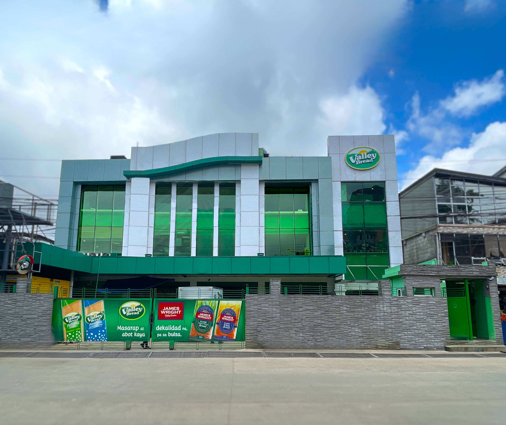

"Baking every single bread perfect, everyday."Valley Bread Inc
Established in 1991, Valley Bread Inc. has come a very long way from when it started. What began as a one-man bakery has grown to be the preferred choice of bread in Baguio and Cordillera.We take pride for the trust that we receive from our consumers and because of that, we strive to bake the perfect bread every time. We also endeavor to meet customer demands and ensure the availability of our products in every establishment we can find.
We want people to remember Valley Bread, Inc. as a company that can provide great quality products that everyone can enjoy as we aspire to be the leading choice of households in Northern Luzon.
Our Mission, Our Vision

Our mission to bake the perfect bread every day emphasizes our
commitment to maintain and improve the quality of our products
from the dough to the packaging and this is enculturated among
our employees from the administration team to the production floor.
We pride ourselves on offering a variety of breads and snack products, with a particular emphasis on dedication to the community. To be the leader in producing varieties of bread that cater to all walks of life, from the health conscious to those willing to try something new. And because our goal is not just to sell food, we want our customers to understand why they should care about where and how it is grown, processed and distributed.
Check our gallery
We pride ourselves on offering a variety of breads and snack products, with a particular emphasis on dedication to the community. To be the leader in producing varieties of bread that cater to all walks of life, from the health conscious to those willing to try something new. And because our goal is not just to sell food, we want our customers to understand why they should care about where and how it is grown, processed and distributed.
Check our gallery